Dalla forma dell'applicazione al modo in cui viene rilasciata e gestita.
Slide 50. Architettura: decisioni e trade-off
Durata prevista: 10 minuti.
Struttura dei componenti
Relazioni e contratti
Qualità da privilegiare
Vincoli e decisioni difficili da cambiare
Schema grafico: una decisione propaga conseguenze
Quattro riquadri sovrapposti, con una freccia verso il basso tra l’uno e l’altro:
Driver e vincoli.
Decisione.
Struttura.
Attributi di qualità.
Didascalia sotto lo schema: misurare i trade-off, non nasconderli.
Slide 51. Monolite e microservizi: cambia l'unità di cambiamento
Durata prevista: 18 minuti.
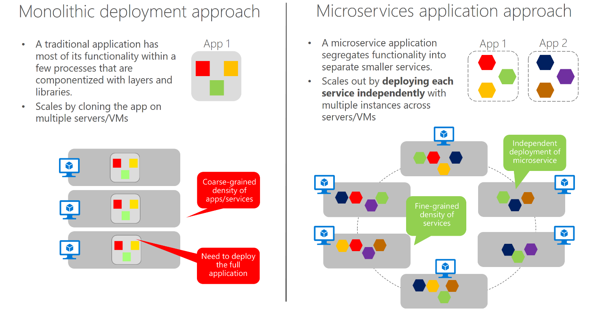
Immagine: Confronto tra approccio monolitico e approccio a microservizi: nel monolite si clona l'intera applicazione su più server, nei microservizi ogni servizio si distribuisce in modo indipendente.
Descrizione. Figura in due metà separate da una linea verticale, con testi in inglese. A sinistra, "Monolithic deployment approach": un'applicazione tradizionale ("App 1", un riquadro grigio con tre quadrati colorati: rosso, giallo, verde) ha la maggior parte delle funzioni in pochi processi; si scala clonando l'intera app su più server o macchine virtuali. Sotto, tre server (icone di monitor) contengono ciascuno una copia completa dei tre quadrati. Due fumetti rossi: "Coarse-grained density of apps/services" (densità di servizi a grana grossa) e "Need to deploy the full application" (occorre distribuire l'intera applicazione). A destra, "Microservices application approach": un'applicazione a microservizi separa le funzioni in servizi più piccoli; "App 1" e "App 2" sono riquadri tratteggiati con tre esagoni colorati ciascuno; si scala distribuendo ogni servizio in modo indipendente con più istanze su server o VM. Sotto, sei server disposti in cerchio, ciascuno con un diverso insieme di esagoni (servizi di colori diversi, anche di app diverse). Due fumetti verdi: "Independent deployment of microservice" e "Fine-grained density of services" (densità di servizi a grana fine).
Testo contenuto nell’immagine
Monolithic deployment approach
A traditional application has most of its functionality within a few processes that are componentized with layers and libraries.
Scales by cloning the app on multiple servers/VMs
App 1. Fumetti: "Coarse-grained density of apps/services"; "Need to deploy the full application".
Microservices application approach
A microservice application segregates functionality into separate smaller services.
Scales out by deploying each service independently with multiple instances across servers/VMs.
App 1, App 2. Fumetti: "Independent deployment of microservice"; "Fine-grained density of services".
Come leggerla
Nel monolite si replica e si rilascia l'intera applicazione.
Nei microservizi ogni servizio può scalare e cambiare in modo indipendente.
Il prezzo è una rete di componenti da governare.
Figura originale: appunti “ARCHITETTURE MICROSERVIZI…”, sezione MONOLITI E MICROSERVIZI
Slide 52. I benefici dei microservizi non arrivano da soli
Durata prevista: 15 minuti.
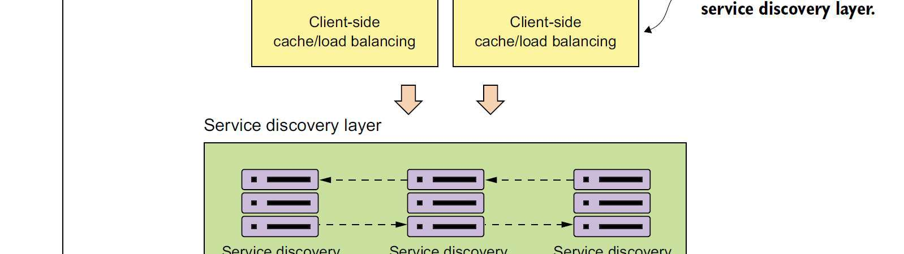
Immagine: Dettaglio di uno schema sul service discovery: due riquadri "Client-side cache/load balancing" con frecce verso il "Service discovery layer", formato da tre nodi collegati tra loro.
Descrizione. Parte centrale (ritaglio) di una figura più ampia da un libro sui microservizi; le altre parti sono mostrate in altre immagini della stessa sequenza. In alto due riquadri gialli, ciascuno con la scritta "Client-side cache/load balancing", cioè la cache lato client che contiene gli indirizzi delle istanze dei servizi e bilancia il carico. Da ciascuno parte una freccia verso il basso che raggiunge il "Service discovery layer", un riquadro verde con tre nodi (pile di server viola). I tre nodi sono collegati da frecce tratteggiate nei due sensi: si sincronizzano tra loro. Il testo sotto ogni nodo, "Service discovery node 1/2/3", è visibile solo in parte. In alto a destra restano le ultime parole di una didascalia: "service discovery layer."
Testo contenuto nell’immagine
Client-side cache/load balancing (due riquadri)
Service discovery layer
Service discovery (nodi 1, 2, 3; testo tagliato)
…service discovery layer.
Didascalia. SERVICE DISCOVERY
repliche e failover
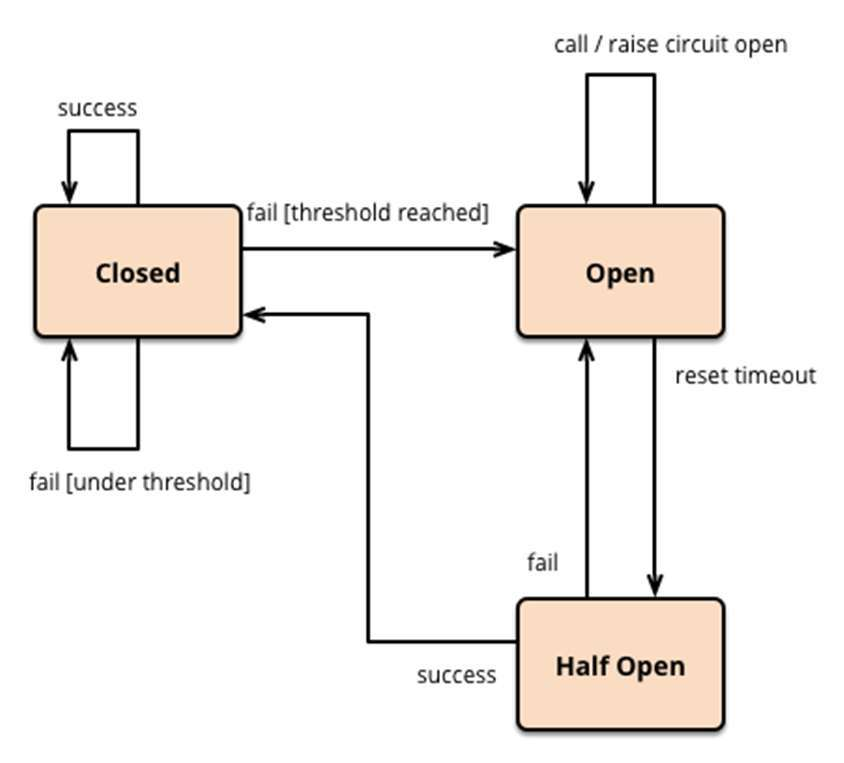
Immagine: Diagramma a stati del Circuit Breaker con tre stati: Closed, Open e Half Open, e le transizioni tra essi.
Descrizione. Diagramma di stato con tre riquadri color pesca. "Closed" (a sinistra in alto): con "success" o con "fail [under threshold]" (fallimento sotto la soglia) resta in Closed, tramite due frecce che tornano sullo stesso stato. Con "fail [threshold reached]" (fallimenti che raggiungono la soglia) passa a "Open" (in alto a destra). In "Open" le chiamate vengono rifiutate: una freccia ad anello riporta "call / raise circuit open". Dopo "reset timeout" (scadenza del timer) passa a "Half Open" (in basso a destra). Da "Half Open": se la chiamata di prova ha "success" torna a "Closed"; se "fail" torna a "Open".
Immagine: Schermata di Kiali, il grafico del traffico tra microservizi nel namespace travel-agency, con servizi collegati da frecce e tempi di risposta.
Descrizione. Screenshot parziale (tagliato in basso) di Kiali, la console di osservabilità per Istio. In alto una barra di controllo: namespace "travel-agency", vista "Traffic", tipo "App graph", intervallo "Last 1m", pulsanti Pause e aggiorna, "Graph tour". Al centro il grafo: ogni servizio è un riquadro con un triangolo (workload) e un quadrato (servizio): "flights", "insurances", "mysqldb", "discounts", più "voyages (travel-portal)" in basso a sinistra. Le frecce mostrano il traffico: verdi se le richieste vanno a buon fine, rosse se ci sono errori (una freccia rossa parte da "voyages"), con etichette del tempo di risposta (20 ms, 23 ms, 35 ms, 6 ms). A destra un pannello con l'applicazione "travels" e la tabella delle richieste HTTP al secondo: In 0,80 totali, 86,25% successi, 13,75% errori; Out 1,71 totali, 93,57% successi, 6,43% errori; sotto due barre orizzontali quasi interamente verdi con una piccola parte rossa.
HTTP (requests per second): Total / %Success / %Error — In 0.80 / 86.25 / 13.75; Out 1.71 / 93.57 / 6.43
Legenda: OK, 3xx, 4xx, 5xx, NR
Didascalia. OSSERVABILITÀ
topologia e tracing
Deploy autonomi, scala selettiva e partial degradation richiedono automazione, pattern di resilienza e diagnosi distribuita.
Figure originali: Microservices-Architectures_v3.pdf, pp. 47, 63 e 76
Slide 53. Il confine giusto parte dal dominio
Durata prevista: 15 minuti.
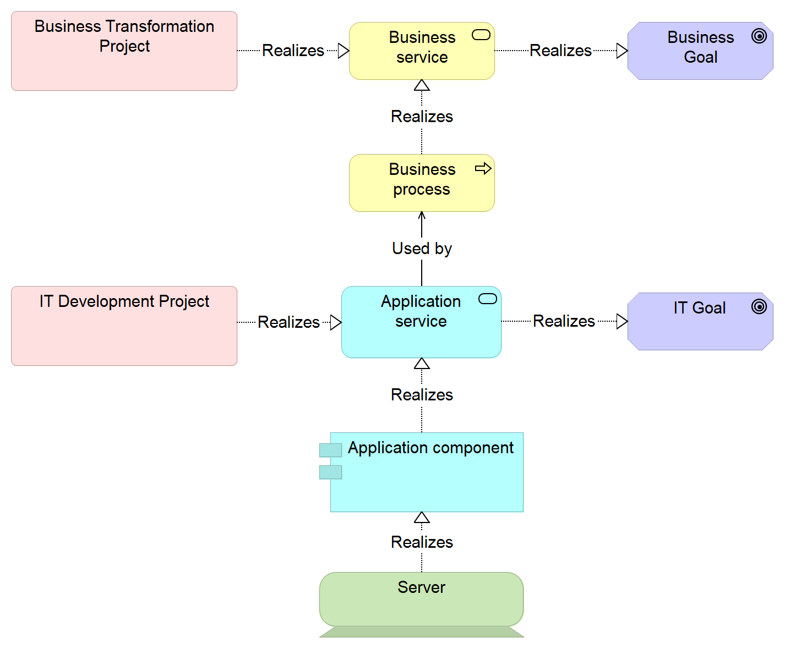
Immagine: Schema ArchiMate che collega progetti, servizi, processo, componente applicativo e server con relazioni "Realizes" e "Used by".
Descrizione. Diagramma in notazione ArchiMate, in inglese, organizzato in tre colonne. Colonna centrale, dall'alto in basso: "Business service" (giallo), "Business process" (giallo), "Application service" (azzurro), "Application component" (azzurro) e "Server" (verde). Le relazioni sono: il Business process realizza il Business service ("Realizes"); l'Application service è usato dal Business process ("Used by"); l'Application component realizza l'Application service; il Server realizza l'Application component. Colonna sinistra (riquadri rosa): "Business Transformation Project", che realizza il Business service, e "IT Development Project", che realizza l'Application service. Colonna destra (riquadri viola): "Business Goal", realizzato dal Business service, e "IT Goal", realizzato dall'Application service.
Testo contenuto nell’immagine
Business Transformation Project —Realizes→ Business service —Realizes→ Business Goal
Business process —Realizes→ Business service
Application service —Used by→ Business process
IT Development Project —Realizes→ Application service —Realizes→ IT Goal
Application component —Realizes→ Application service
Server —Realizes→ Application component
Business
Capacità e processi
Servizio
Responsabilità coesa
Il confine segue il dominio: non coincide automaticamente con server, team o livelli tecnici.
Dati
Ownership e modello
API
Contratto esplicito
Figura originale: appunti “ARCHITETTURE MICROSERVIZI…”, schema ArchiMate/DDD
Slide 54. Il contratto API: quattro ingredienti
Durata prevista: 15 minuti.
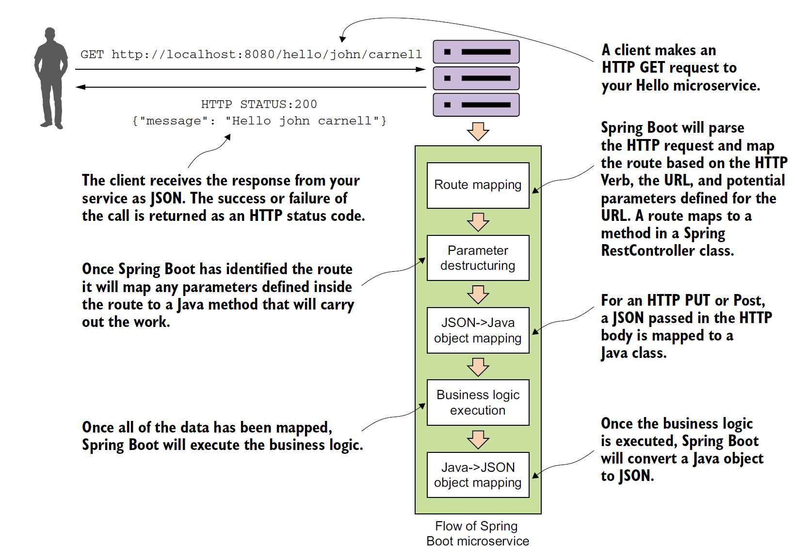
Immagine: Schema del flusso di una richiesta HTTP GET in un microservizio Spring Boot: dal client al mapping della rotta, dei parametri, della logica di business e alla risposta JSON.
Descrizione. Figura da un libro sui microservizi con Spring Boot. A sinistra la sagoma di un utente (client) invia una richiesta "GET http://localhost:8080/hello/john/carnell" a un server (pila di tre unità viola) e riceve "HTTP STATUS:200" con il corpo {"message": "Hello john carnell"}. Sotto il server c'è un riquadro verde "Flow of Spring Boot microservice" con cinque passaggi in sequenza, collegati da frecce verso il basso: "Route mapping", "Parameter destructuring", "JSON->Java object mapping", "Business logic execution", "Java->JSON object mapping". Ogni passaggio e la richiesta/risposta hanno una didascalia con freccia.
Testo contenuto nell’immagine
GET http://localhost:8080/hello/john/carnell
HTTP STATUS:200 {"message": "Hello john carnell"}
"A client makes an HTTP GET request to your Hello microservice."
"The client receives the response from your service as JSON. The success or failure of the call is returned as an HTTP status code."
Flow of Spring Boot microservice: Route mapping → Parameter destructuring → JSON->Java object mapping → Business logic execution → Java->JSON object mapping.
"Spring Boot will parse the HTTP request and map the route based on the HTTP Verb, the URL, and potential parameters defined for the URL. A route maps to a method in a Spring RestController class."
"Once Spring Boot has identified the route it will map any parameters defined inside the route to a Java method that will carry out the work."
"For an HTTP PUT or Post, a JSON passed in the HTTP body is mapped to a Java class."
"Once all of the data has been mapped, Spring Boot will execute the business logic."
"Once the business logic is executed, Spring Boot will convert a Java object to JSON."
I quattro ingredienti del contratto API
Quattro riquadri numerati:
Servizi: cosa è disponibile.
Input: cosa inviare.
Output: cosa ritorna.
Schemi: forma e tipi dei dati.
Una specifica formale consente documentazione, validazione, mocking e generazione di strumenti.
Slide 55. API Gateway: un punto di ingresso, molte policy
Durata prevista: 18 minuti.
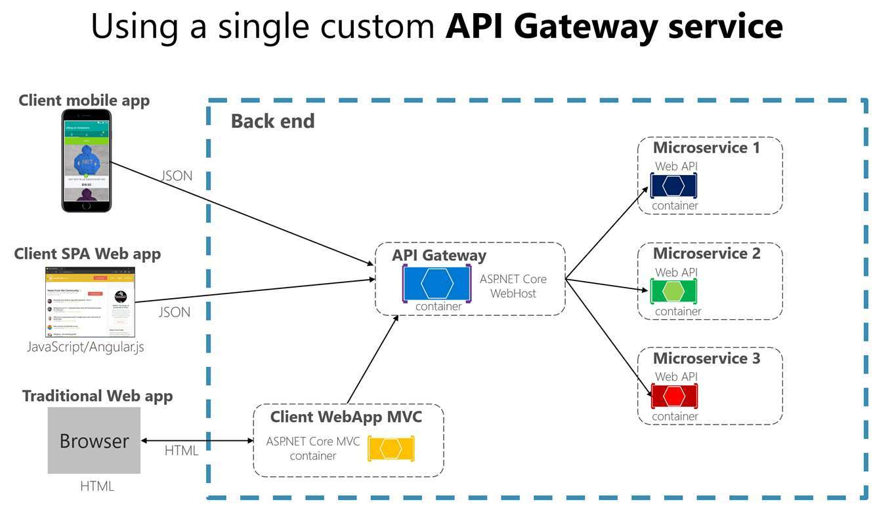
Immagine: Schema "Using a single custom API Gateway service": tre tipi di client passano da un unico API Gateway verso tre microservizi nel back end.
Descrizione. Diagramma Microsoft in inglese. A sinistra tre client: "Client mobile app" (telefono) e "Client SPA Web app" (JavaScript/Angular.js) inviano richieste in formato JSON; "Traditional Web app" (un browser) comunica in HTML con il "Client WebApp MVC" (contenitore ASP.NET Core MVC). Tutti questi client confluiscono, con frecce, in un unico riquadro "API Gateway" (contenitore, ASP.NET Core WebHost). Il gateway, a sua volta, instrada le richieste verso tre riquadri, "Microservice 1", "Microservice 2" e "Microservice 3", ciascuno una Web API in un container. Tutto tranne i client e il browser sta dentro un grande riquadro tratteggiato chiamato "Back end".
Testo contenuto nell’immagine
Using a single custom API Gateway service
Client mobile app —JSON→ API Gateway
Client SPA Web app (JavaScript/Angular.js) —JSON→ API Gateway
Traditional Web app (Browser) ←HTML→ Client WebApp MVC (ASP.NET Core MVC container) → API Gateway
API Gateway (container, ASP.NET Core WebHost) → Microservice 1 (Web API container); Microservice 2 (Web API container); Microservice 3 (Web API container)
Riquadro "Back end".
Policy trasversali
Routing e versioni
Autenticazione
Rate limiting e quote
Caching e CORS
Logging e metriche
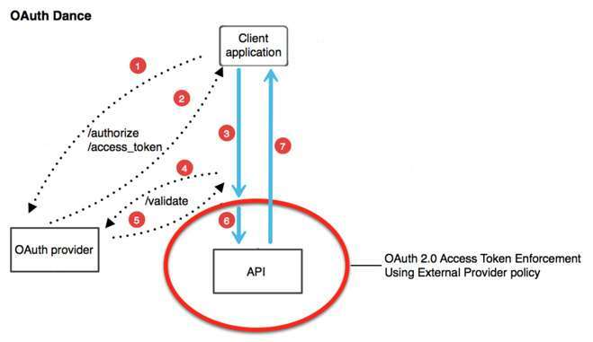
Immagine: Schema "OAuth Dance": il client ottiene un token dal provider OAuth e lo usa per chiamare l'API, che lo fa validare dal provider.
Descrizione. Diagramma con tre elementi: in alto "Client application", a sinistra "OAuth provider", in basso "API", quest'ultimo racchiuso in un grande cerchio rosso con l'etichetta "OAuth 2.0 Access Token Enforcement Using External Provider policy". Sette frecce numerate descrivono la sequenza. Frecce tratteggiate tra client e provider: 1 il client chiede l'autorizzazione al provider e 2 riceve il token (percorsi "/authorize" e "/access_token"). Frecce azzurre piene: 3 il client chiama l'API con il token e 7 l'API restituisce la risposta al client. Frecce tratteggiate tra API e provider: 4 e 5, rispettivamente la richiesta di validazione del token ("/validate") al provider e la risposta; la freccia 6 indica che, a validazione riuscita, l'API elabora la richiesta.
Testo contenuto nell’immagine
OAuth Dance
Client application; OAuth provider; API
1, 2: /authorize, /access_token (tra client e provider)
3: client → API
4, 5: /validate (tra API e provider)
6: dentro l'API
7: API → client
Etichetta: "OAuth 2.0 Access Token Enforcement Using External Provider policy"
Figure originali: Microservices-Architectures_v3.pdf, pp. 64 e 78
Slide 56. Container: immagine, istanza, runtime
Durata prevista: 15 minuti.
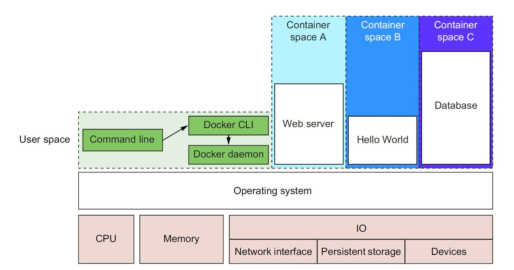
Immagine: Schema dell'architettura Docker: sotto, hardware e sistema operativo; sopra, la parte utente con Docker CLI e daemon e tre container isolati.
Descrizione. Schema a strati. In basso l'hardware: riquadri "CPU", "Memory" e "IO" (che comprende "Network interface", "Persistent storage" e "Devices"). Sopra l'hardware, a tutta larghezza, il riquadro "Operating system". Sopra il sistema operativo la fascia "User space": a sinistra un'area verde con "Command line", che invia comandi con una freccia a "Docker CLI", il quale a sua volta comunica con "Docker daemon". A destra tre colonne affiancate, ognuna uno spazio isolato che condivide lo stesso sistema operativo: "Container space A" con "Web server", "Container space B" con "Hello World", "Container space C" con "Database".
Testo contenuto nell’immagine
User space: Command line → Docker CLI → Docker daemon
Il runtime gestisce il ciclo di vita; i dati durevoli richiedono volumi.
Figura originale: Microservices-Architectures_v3.pdf, p. 80; testo: appunti Docker/Kubernetes
Slide 57. VM e container: due livelli di isolamento
Durata prevista: 12 minuti.
Macchina virtuale
Applicazione
Guest OS
Hypervisor
Hardware
Container
Applicazione + dipendenze
Container runtime
Host OS / kernel
Hardware
Immagine: Fotografia di un piazzale con container da trasporto colorati impilati e un camion che ne trasporta uno, al tramonto.
Descrizione. Fotografia decorativa usata come metafora del container software: a destra pile di container metallici standard, rossi e gialli, alte più file; a sinistra un camion con un container giallo; sullo sfondo una collina verde e il sole basso che illumina il cielo di arancione.
Spesso i container girano dentro VM: i due modelli si combinano.
Figura originale: Microservices-Architectures_v3.pdf, p. 82; confronto dagli appunti Docker/Kubernetes
Slide 58. Perché serve un orchestratore
Durata prevista: 15 minuti.
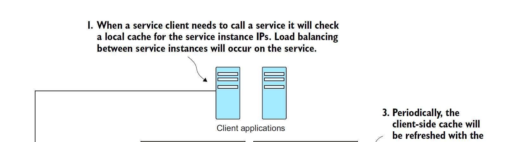
Immagine: Prima parte dello schema sul service discovery: le applicazioni client controllano una cache locale degli indirizzi IP delle istanze del servizio.
Descrizione. Ritaglio superiore di una figura da un libro sui microservizi. In alto la didascalia numero 1; sotto due icone di server azzurri con la scritta "Client applications". Una linea esce da un'applicazione client e scende verso la parte inferiore dello schema (mostrata nelle altre due immagini della sequenza). A destra inizia la didascalia numero 3, tagliata.
Testo contenuto nell’immagine
1. When a service client needs to call a service it will check a local cache for the service instance IPs. Load balancing between service instances will occur on the service.
Client applications
3. Periodically, the client-side cache will be refreshed with the … (testo tagliato)
1. Trova istanze sane
Immagine: Dettaglio di uno schema sul service discovery: due riquadri "Client-side cache/load balancing" con frecce verso il "Service discovery layer", formato da tre nodi collegati tra loro.
Descrizione. Parte centrale (ritaglio) di una figura più ampia da un libro sui microservizi; le altre parti sono mostrate in altre immagini della stessa sequenza. In alto due riquadri gialli, ciascuno con la scritta "Client-side cache/load balancing", cioè la cache lato client che contiene gli indirizzi delle istanze dei servizi e bilancia il carico. Da ciascuno parte una freccia verso il basso che raggiunge il "Service discovery layer", un riquadro verde con tre nodi (pile di server viola). I tre nodi sono collegati da frecce tratteggiate nei due sensi: si sincronizzano tra loro. Il testo sotto ogni nodo, "Service discovery node 1/2/3", è visibile solo in parte. In alto a destra restano le ultime parole di una didascalia: "service discovery layer."
Testo contenuto nell’immagine
Client-side cache/load balancing (due riquadri)
Service discovery layer
Service discovery (nodi 1, 2, 3; testo tagliato)
…service discovery layer.
2. Aggiorna la mappa
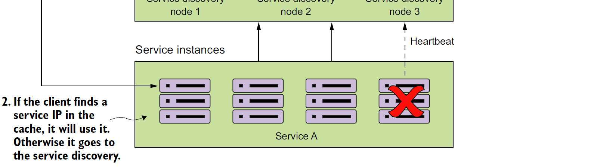
Immagine: Parte finale dello schema sul service discovery: le istanze del Service A inviano heartbeat ai nodi di discovery e un'istanza guasta è barrata con una X rossa.
Descrizione. Ritaglio inferiore di una figura da un libro sui microservizi. In alto si intravede il fondo del riquadro verde con i tre nodi di discovery ("Service discovery node 1", "node 2", "node 3"). Sotto, un secondo riquadro verde chiamato "Service A" contiene quattro istanze del servizio (pile di server viola). Frecce verso l'alto collegano le istanze ai nodi di discovery: così le istanze si registrano. Quella più a destra ha una grande X rossa, cioè è guasta, e il suo collegamento tratteggiato è etichettato "Heartbeat": il segnale periodico che, se manca, fa considerare l'istanza non disponibile. A sinistra la didascalia numero 2.
Testo contenuto nell’immagine
Service discovery node 1; node 2; node 3
Heartbeat
Service instances
Service A
2. If the client finds a service IP in the cache, it will use it. Otherwise it goes to the service discovery.
Kubernetes osserva lo stato reale e lo riconcilia con quello desiderato.
Sequenza originale: Microservices-Architectures_v3.pdf, p. 47; concetti: appunti Docker/Kubernetes
Slide 59. Kubernetes: dal cluster agli oggetti applicativi
Durata prevista: 20 minuti.
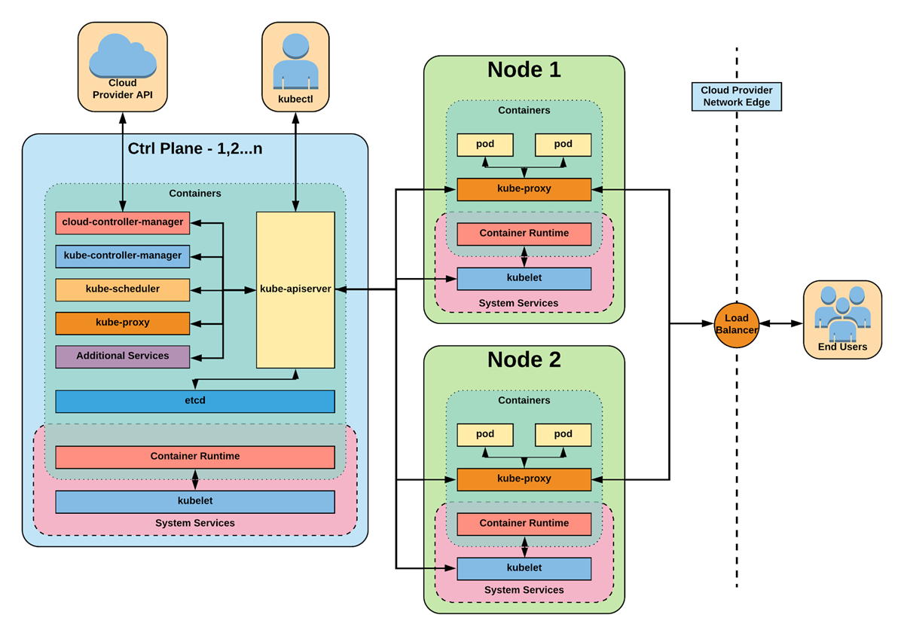
Immagine: Architettura di Kubernetes: control plane con kube-apiserver ed etcd, due nodi worker con pod, kube-proxy, kubelet, e un load balancer verso gli utenti finali.
Descrizione. Diagramma dell'architettura di un cluster Kubernetes, in inglese. A sinistra il riquadro azzurro "Ctrl Plane - 1,2...n" (il piano di controllo, replicabile su più macchine). Dentro, nell'area "Containers", il "kube-apiserver" (riquadro giallo verticale) è collegato con frecce a "cloud-controller-manager", "kube-controller-manager", "kube-scheduler", "kube-proxy" e "Additional Services", e a "etcd", il database di stato del cluster. Sotto, i "System Services" comprendono "Container Runtime" e "kubelet". Sopra il piano di controllo due attori esterni: "Cloud Provider API" (collegata al cloud-controller-manager) e "kubectl" (l'utente amministratore, collegato al kube-apiserver). A destra due riquadri verdi uguali, "Node 1" e "Node 2" (i nodi worker): ciascuno contiene due "pod" nell'area Containers, "kube-proxy", e nei System Services "Container Runtime" e "kubelet". Il kube-apiserver comunica con il kubelet di ogni nodo. A destra della linea verticale tratteggiata "Cloud Provider Network Edge" ci sono un "Load Balancer", collegato al kube-proxy di entrambi i nodi, e gli "End Users", che lo raggiungono.
Slide 67. Il team DevOps S21: responsabilità lungo il flusso
Durata prevista: 15 minuti.
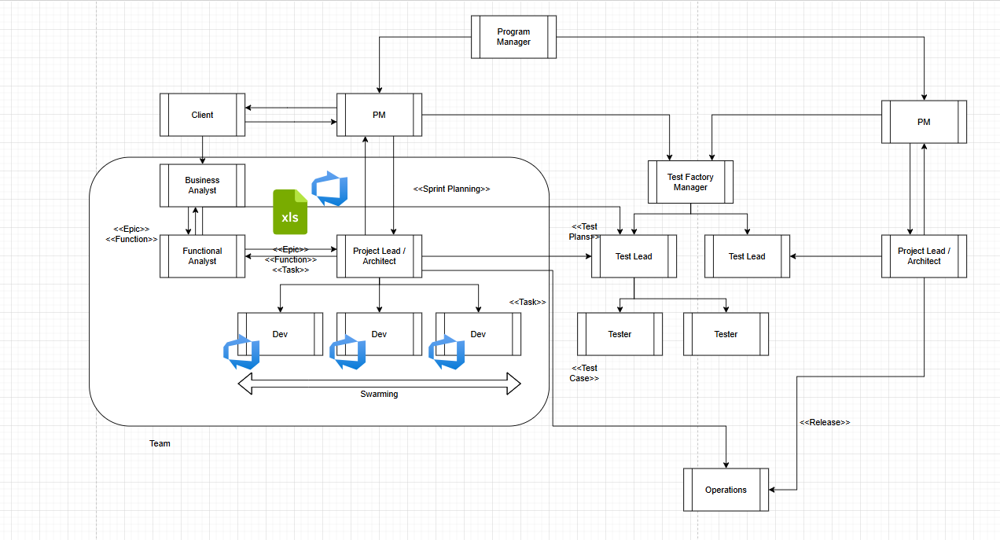
Immagine: Organigramma del modello di collaborazione S21: team di sviluppo con analisti e sviluppatori, test factory, project manager e operations, con i flussi di epic, task, test e release.
Descrizione. Diagramma a riquadri e frecce, in inglese. In alto "Program Manager", che comunica con due "PM" (uno a sinistra, uno a destra). A sinistra il "Client" dialoga con il primo PM e con il "Business Analyst". Un grande riquadro arrotondato "Team" racchiude: "Business Analyst", "Functional Analyst", "Project Lead / Architect" e tre "Dev", sotto i quali una doppia freccia "Swarming" indica che gli sviluppatori collaborano insieme sullo stesso lavoro. Le frecce portano le etichette "<<Epic>>", "<<Function>>", "<<Task>>" e "<<Sprint Planning>>"; due icone indicano gli strumenti: un foglio Excel e il logo di Azure DevOps (accanto agli sviluppatori). A destra la test factory: "Test Factory Manager", che coordina due "Test Lead" e due "Tester"; le etichette "<<Test Plans>>" e "<<Test Case>>" descrivono ciò che passa tra project lead e test. In basso "Operations", che riceve dal Project Lead del team e dal Project Lead / Architect di destra l'etichetta "<<Release>>".
Testo contenuto nell’immagine
Program Manager; PM; PM; Client; Business Analyst; Functional Analyst; Project Lead / Architect; Dev; Dev; Dev; Swarming; Test Factory Manager; Test Lead; Test Lead; Tester; Tester; Project Lead / Architect; Operations; Team.
Il lavoro attraversa ruoli diversi; la piattaforma conserva i collegamenti.
Figura 1 originale: struttura organizzativa S21 per l'adozione DevOps
Slide 68. Dal requisito al ticket: una gerarchia verificabile
Durata prevista: 15 minuti.
Schema: la gerarchia del lavoro
Cinque riquadri in sequenza da sinistra a destra, collegati da frecce; ciascuno è un livello più dettagliato del precedente:
Iniziativa: contenitore.
Epic: obiettivo.
Feature: caso d’uso.
User story: valore per l’utente.
Task / Bug: lavoro tecnico.
Sotto lo schema:
Catena dei documenti: BRD → dominio → Use Case → Feature → User Story → Sequence Diagram → Task.
DoR (Definition of Ready), prima di iniziare: titolo, bisogno, criteri di accettazione, stima e dipendenze.
DoD (Definition of Done), per chiudere: criteri soddisfatti, task chiusi, codice revisionato e validazione completata.
Slide 69. Ticket e board: dal chiarimento al lavoro quotidiano
Durata prevista: 18 minuti.
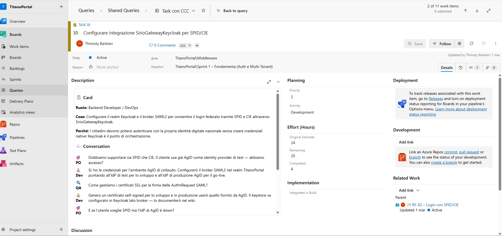
Immagine: Azure DevOps: scheda di un Task con descrizione in formato Card e conversazione tra PO, Dev e QA sull'integrazione con SPID e CIE.
Descrizione. Screenshot di Azure DevOps (progetto "TitanoPortal"), pagina di dettaglio del work item "TASK 30 – Configurare integrazione SirioGatewayKeycloak per SPID/CIE". A sinistra il menu del progetto (Overview, Boards, Work items, Backlogs, Sprints, Queries, Delivery Plans, Analytics views, Repos, Pipelines, Test Plans, Artifacts). Il task è assegnato a Thimoty Barbieri, stato "Active", area TitanoPortal\Middleware, iterazione "Sprint 1 – Fondamenta (Auth e Multi-Tenant)". La descrizione ha la forma di una "Card" (Ruolo, Cosa, Perché) seguita da una "Conversation" che simula il dialogo tra Product Owner (PO), sviluppatore (Dev) e tester (QA). A destra: Planning (priorità 2, attività Development), Effort in ore (stima originale 24, rimanenti 20, completate 4), Deployment, Development (link a commit, pull request o branch), Related Work con il padre "29 RF-02 – Login con SPID/CIE".
Testo contenuto nell’immagine
TitanoPortal — Queries › Shared Queries › Task con CCC — 2 of 11 work items
TASK 30 — 30 Configurare integrazione SirioGatewayKeycloak per SPID/CIE
Thimoty Barbieri; 0 Comments; tag: ccc. Updated by Thimoty Barbieri: 1 mar
State: Active; Area: TitanoPortal\Middleware; Reason: Work started; Iteration: TitanoPortal\Sprint 1 – Fondamenta (Auth e Multi-Tenant)
Description:
Card
Ruolo: Backend Developer / DevOps
Cosa: Configurare il realm Keycloak e il broker SAML2 per consentire il login federato tramite SPID e CIE attraverso SirioGatewayKeycloak.
Perché: I cittadini devono potersi autenticare con la propria identità digitale nazionale senza creare credenziali native; Keycloak è il punto di orchestrazione.
Conversation
PO: Dobbiamo supportare sia SPID che CIE. Il cliente usa già AgID come identity provider di test — abbiamo accesso?
Dev: Sì, ho le credenziali per l'ambiente AgID di collaudo. Configurerò il broker SAML2 nel realm TitanoPortal puntando all'IdP di test per lo sviluppo e all'IdP di produzione AgID per il go-live.
QA: Come gestiamo i certificati SSL per la firma delle AuthnRequest SAML?
Dev: Genero un certificato self-signed per lo sviluppo e in produzione userò quello fornito da AgID. Il keystore va configurato in Keycloak lato broker — lo documenterò nel wiki.
PO: E se l'utente sceglie SPID ma l'IdP di AgID è down?
Planning: Priority 2; Activity Development
Effort (Hours): Original Estimate 24; Remaining 20; Completed 4
Deployment: To track releases associated with this work item, go to Releases and turn on deployment status reporting for Boards in your pipeline's Options menu. Learn more about deployment status reporting.
Development: Add link. Link an Azure Repos commit, pull request or branch to see the status of your development. You can also create a branch to get started.
Related Work: Parent — 29 RF-02 – Login con SPID/CIE (Updated 1 mar, Active)
User story / task con CCC
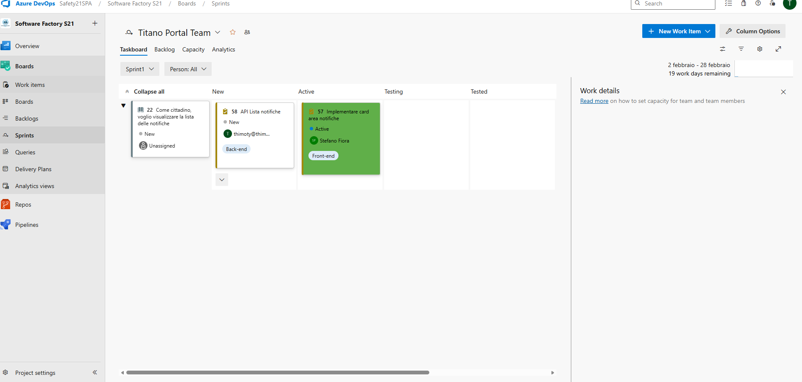
Immagine: Azure DevOps: Taskboard dello Sprint 1 del team Titano Portal con tre card nelle colonne New e Active.
Descrizione. Screenshot di Azure DevOps (progetto Software Factory S21, Boards › Sprints) con il Taskboard del "Titano Portal Team". Colonne: New, Active, Testing, Tested. Nella colonna New: la user story 22 "Come cittadino, voglio visualizzare la lista delle notifiche", non assegnata, e il task 58 "API Lista notifiche", assegnato a thimoty@thim…, con tag "Back-end". Nella colonna Active, su sfondo verde: il task 57 "Implementare card area notifiche", assegnato a Stefano Fiora, con tag "Front-end". Le colonne Testing e Tested sono vuote. A destra il pannello "Work details" e, in alto a destra, il periodo dello sprint: dal 2 al 28 febbraio, 19 giorni lavorativi rimanenti.
Sprint1; Person: All; 2 febbraio - 28 febbraio; 19 work days remaining
Colonne: New, Active, Testing, Tested
New: 22 "Come cittadino, voglio visualizzare la lista delle notifiche" — New — Unassigned. 58 "API Lista notifiche" — New — thimoty@thim… — Back-end.
Active: 57 "Implementare card area notifiche" — Active — Stefano Fiora — Front-end.
Work details: "Read more on how to set capacity for team and team members"
Sprint board e stato del flusso
Figure originali S21: User Story con Card-Conversation-Confirmation e Sprint Board
Slide 70. Git: il codice avanza per branch e controlli
Durata prevista: 15 minuti.
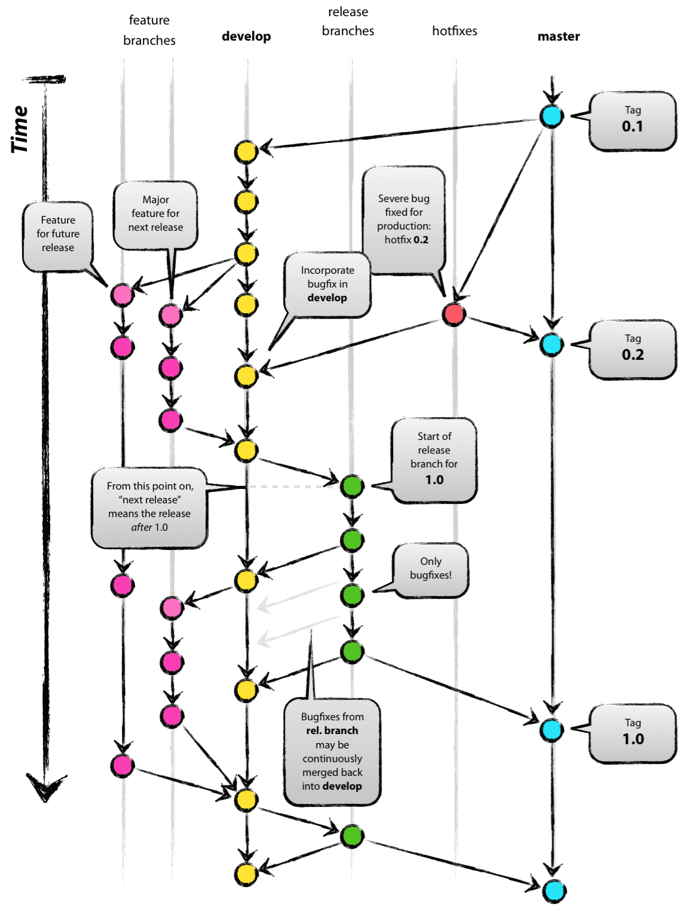
Immagine: Diagramma Git Flow di Vincent Driessen: branch master, hotfixes, release, develop e feature nel tempo, con i tag 0.1, 0.2 e 1.0.
Descrizione. Diagramma disegnato a mano con il tempo che scorre dall'alto verso il basso (freccia verticale "Time" a sinistra). Cinque colonne, da sinistra a destra: "feature branches" (cerchi rosa), "develop" (cerchi gialli), "release branches" (cerchi verdi), "hotfixes" (cerchio rosso) e "master" (cerchi azzurri). Ogni cerchio è un commit e le frecce indicano i merge. In alto "master" ha il commit etichettato "Tag 0.1"; da lì parte "develop". Dalle feature branch, create da develop, i commit vengono riuniti in develop quando la funzione è pronta ("Major feature for next release", "Feature for future release"). Un hotfix parte da master per correggere un bug grave in produzione ("Severe bug fixed for production: hotfix 0.2"), viene riunito in master con "Tag 0.2" e anche in develop ("Incorporate bugfix in develop"). Poi da develop parte una release branch ("Start of release branch for 1.0"): da quel punto "next release" significa la release successiva alla 1.0; sulla release branch si fanno "Only bugfixes!", che possono essere riportati in continuazione in develop ("Bugfixes from rel. branch may be continuously merged back into develop"); alla fine la release branch viene riunita in master con "Tag 1.0" e in develop. In fondo una nuova release branch porta a un ulteriore commit su master.
Fumetti: "Tag 0.1"; "Tag 0.2"; "Tag 1.0"; "Feature for future release"; "Major feature for next release"; "Severe bug fixed for production: hotfix 0.2"; "Incorporate bugfix in develop"; "Start of release branch for 1.0"; "From this point on, 'next release' means the release after 1.0"; "Only bugfixes!"; "Bugfixes from rel. branch may be continuously merged back into develop".
Git Flow
Branch principali:
master: produzione e release.
develop: integrazione della prossima release.
Branch di supporto: feature/*, release/*, hotfix/*.
Quando è adatto?
Software versionato, o più versioni supportate contemporaneamente.
Nota 2020
Per la continuous delivery Driessen suggerisce un workflow più semplice, come GitHub Flow.
Slide 71. Pull Request: il punto di controllo prima del merge
Durata prevista: 15 minuti.
Immagine: Azure DevOps: scheda di un Task con descrizione in formato Card e conversazione tra PO, Dev e QA sull'integrazione con SPID e CIE.
Descrizione. Screenshot di Azure DevOps (progetto "TitanoPortal"), pagina di dettaglio del work item "TASK 30 – Configurare integrazione SirioGatewayKeycloak per SPID/CIE". A sinistra il menu del progetto (Overview, Boards, Work items, Backlogs, Sprints, Queries, Delivery Plans, Analytics views, Repos, Pipelines, Test Plans, Artifacts). Il task è assegnato a Thimoty Barbieri, stato "Active", area TitanoPortal\Middleware, iterazione "Sprint 1 – Fondamenta (Auth e Multi-Tenant)". La descrizione ha la forma di una "Card" (Ruolo, Cosa, Perché) seguita da una "Conversation" che simula il dialogo tra Product Owner (PO), sviluppatore (Dev) e tester (QA). A destra: Planning (priorità 2, attività Development), Effort in ore (stima originale 24, rimanenti 20, completate 4), Deployment, Development (link a commit, pull request o branch), Related Work con il padre "29 RF-02 – Login con SPID/CIE".
Testo contenuto nell’immagine
TitanoPortal — Queries › Shared Queries › Task con CCC — 2 of 11 work items
TASK 30 — 30 Configurare integrazione SirioGatewayKeycloak per SPID/CIE
Thimoty Barbieri; 0 Comments; tag: ccc. Updated by Thimoty Barbieri: 1 mar
State: Active; Area: TitanoPortal\Middleware; Reason: Work started; Iteration: TitanoPortal\Sprint 1 – Fondamenta (Auth e Multi-Tenant)
Description:
Card
Ruolo: Backend Developer / DevOps
Cosa: Configurare il realm Keycloak e il broker SAML2 per consentire il login federato tramite SPID e CIE attraverso SirioGatewayKeycloak.
Perché: I cittadini devono potersi autenticare con la propria identità digitale nazionale senza creare credenziali native; Keycloak è il punto di orchestrazione.
Conversation
PO: Dobbiamo supportare sia SPID che CIE. Il cliente usa già AgID come identity provider di test — abbiamo accesso?
Dev: Sì, ho le credenziali per l'ambiente AgID di collaudo. Configurerò il broker SAML2 nel realm TitanoPortal puntando all'IdP di test per lo sviluppo e all'IdP di produzione AgID per il go-live.
QA: Come gestiamo i certificati SSL per la firma delle AuthnRequest SAML?
Dev: Genero un certificato self-signed per lo sviluppo e in produzione userò quello fornito da AgID. Il keystore va configurato in Keycloak lato broker — lo documenterò nel wiki.
PO: E se l'utente sceglie SPID ma l'IdP di AgID è down?
Planning: Priority 2; Activity Development
Effort (Hours): Original Estimate 24; Remaining 20; Completed 4
Deployment: To track releases associated with this work item, go to Releases and turn on deployment status reporting for Boards in your pipeline's Options menu. Learn more about deployment status reporting.
Development: Add link. Link an Azure Repos commit, pull request or branch to see the status of your development. You can also create a branch to get started.
Related Work: Parent — 29 RF-02 – Login con SPID/CIE (Updated 1 mar, Active)
Le cinque condizioni prima del merge
Cinque riquadri numerati, in sequenza dall’alto verso il basso:
Work item collegato.
Reviewer nominato.
Build CI superata.
Discussione risolta.
Merge nel branch target.
Slide 72. Pipeline CI/CD: dal commit a un artefatto distribuibile
Durata prevista: 18 minuti.
Schema: le sei fasi della pipeline
Sei riquadri in sequenza da sinistra a destra, collegati da frecce: Commit → Build → Test → Package → Publish → Deploy.
Esecuzione e log
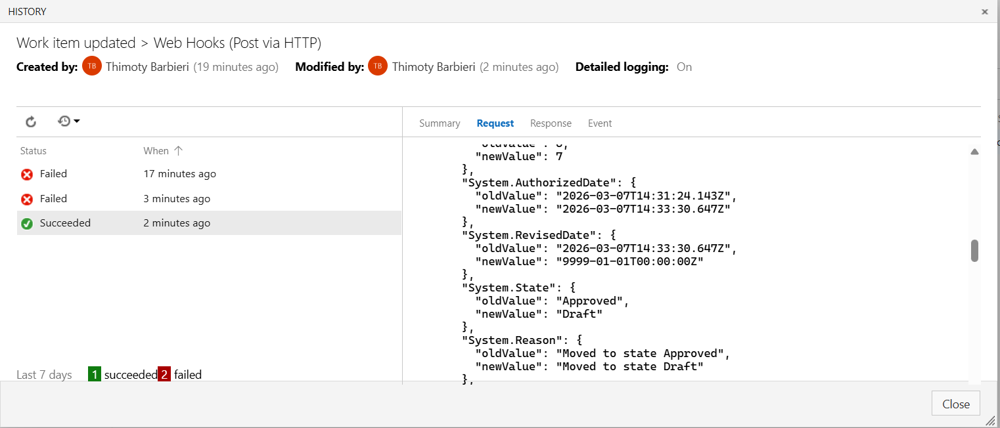
Immagine: Azure DevOps, finestra History di un Web Hook: tre invii, due falliti e uno riuscito, con il contenuto JSON della richiesta.
Descrizione. Screenshot della finestra "History" di Azure DevOps per la sottoscrizione "Work item updated > Web Hooks (Post via HTTP)". In alto: creata da Thimoty Barbieri (19 minuti fa), modificata da Thimoty Barbieri (2 minuti fa), "Detailed logging: On". A sinistra l'elenco dei tentativi: due "Failed" (17 e 3 minuti fa) e uno "Succeeded" (2 minuti fa, selezionato); in fondo il riepilogo degli ultimi 7 giorni: 1 riuscito e 2 falliti. A destra, nella scheda "Request" (le altre sono Summary, Response, Event), si vede parte del JSON inviato: i campi modificati dal work item con "oldValue" e "newValue", tra cui lo stato che passa da "Approved" a "Draft" con motivo "Moved to state Draft".
Testo contenuto nell’immagine
HISTORY — Work item updated > Web Hooks (Post via HTTP)
Created by: Thimoty Barbieri (19 minutes ago) · Modified by: Thimoty Barbieri (2 minutes ago) · Detailed logging: On
"System.Reason": { "oldValue": "Moved to state Approved", "newValue": "Moved to state Draft" }
Pulsante: Close
Artifact versionati
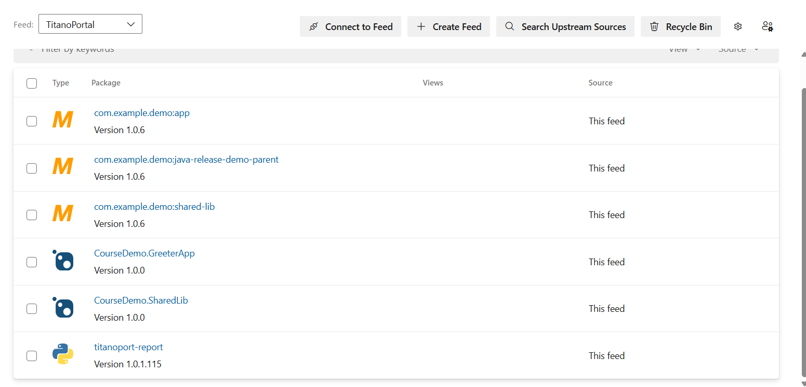
Immagine: Azure DevOps Artifacts: feed "TitanoPortal" con sei pacchetti Maven, NuGet e Python.
Descrizione. Screenshot della pagina Artifacts di Azure DevOps con il feed "TitanoPortal". In alto i pulsanti "Connect to Feed", "Create Feed", "Search Upstream Sources" e "Recycle Bin". Una tabella con colonne Type, Package, Views e Source elenca sei pacchetti, tutti con sorgente "This feed": tre pacchetti Maven (icona "M" arancione) e due pacchetti NuGet (icona blu), più un pacchetto Python (icona con serpenti blu e giallo).
Testo contenuto nell’immagine
Feed: TitanoPortal — Connect to Feed · Create Feed · Search Upstream Sources · Recycle Bin
Colonne: Type, Package, Views, Source
Maven: com.example.demo:app, Version 1.0.6, This feed
Maven: com.example.demo:java-release-demo-parent, Version 1.0.6, This feed
Maven: com.example.demo:shared-lib, Version 1.0.6, This feed
NuGet: CourseDemo.GreeterApp, Version 1.0.0, This feed
NuGet: CourseDemo.SharedLib, Version 1.0.0, This feed
Python: titanoport-report, Version 1.0.1.115, This feed
Slide 73. Il flusso di testing S21: tre livelli, un solo feedback loop
Durata prevista: 18 minuti.
Tre livelli di test in sequenza
Tre riquadri sovrapposti, con una freccia verso il basso tra l’uno e l’altro; ciascuno ha un titolo, un contesto e una descrizione:
Livello
Contesto
Descrizione
1. Unit test / test del developer
Task · locale
Verifica il comportamento del codice prima della Pull Request.
2. Test automatici in CI
PR · build
La pipeline esegue i controlli: un esito negativo blocca il merge.
3. Test di integrazione e validazione
develop → UAT → staging
Integrazione tecnica, accettazione degli stakeholder e verifica finale pre-produzione.
Se un test fallisce: niente avanzamento; correggere il Task o aprire un Bug collegato, poi rieseguire il test.
Slide 74. Dal requisito al difetto: ogni test lascia un'evidenza
Durata prevista: 18 minuti.
Sequenza in quattro passi: ogni test lascia un’evidenza, dal piano al difetto.
1. Test plan
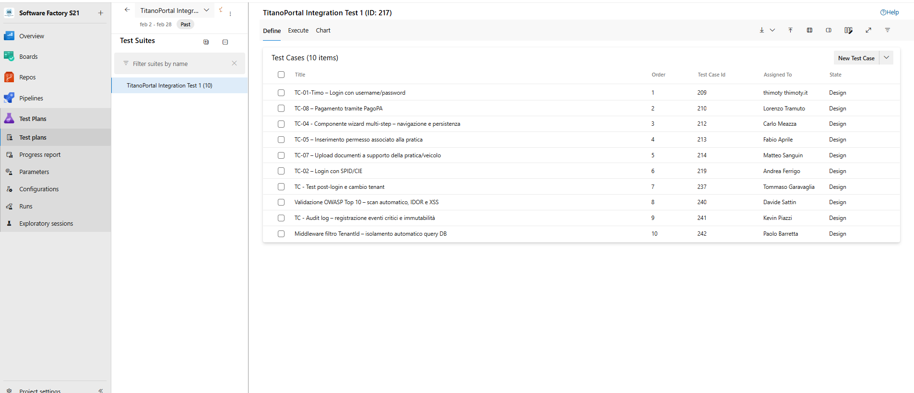
Immagine: Azure DevOps Test Plans: suite "TitanoPortal Integration Test 1" con dieci casi di test, ciascuno assegnato a una persona e in stato Design.
Descrizione. Screenshot della pagina Test Plans di Azure DevOps (progetto Software Factory S21). A sinistra il menu (Overview, Boards, Repos, Pipelines, Test Plans con Test plans, Progress report, Parameters, Configurations, Runs, Exploratory sessions). Al centro la lista delle suite, con una sola suite, "TitanoPortal Integration Test 1 (10)". A destra, nella scheda Define (le altre sono Execute e Chart) del piano "TitanoPortal Integration Test 1 (ID: 217)", periodo feb 2 – feb 28, stato "Past", la tabella dei dieci Test Case con titolo, ordine, ID, assegnatario e stato: tutti in stato "Design".
Testo contenuto nell’immagine
TitanoPortal Integration Test 1 (ID: 217) — feb 2 - feb 28 (Past) — Define · Execute · Chart
Test Suites: TitanoPortal Integration Test 1 (10)
Test Cases (10 items) — colonne: Title, Order, Test Case Id, Assigned To, State
2. TC-08 – Pagamento tramite PagoPA — 210 — Lorenzo Tramuto — Design
3. TC-04 - Componente wizard multi-step – navigazione e persistenza — 212 — Carlo Meazza — Design
4. TC-05 – Inserimento permesso associato alla pratica — 213 — Fabio Aprile — Design
5. TC-07 – Upload documenti a supporto della pratica/veicolo — 214 — Matteo Sanguin — Design
6. TC-02 – Login con SPID/CIE — 219 — Andrea Ferrigo — Design
7. TC - Test post-login e cambio tenant — 237 — Tommaso Garavaglia — Design
8. Validazione OWASP Top 10 – scan automatico, IDOR e XSS — 240 — Davide Sattin — Design
9. TC - Audit log – registrazione eventi critici e immutabilità — 241 — Kevin Piazzi — Design
10. Middleware filtro TenantId – isolamento automatico query DB — 242 — Paolo Barretta — Design
Pulsante: New Test Case
2. Test case
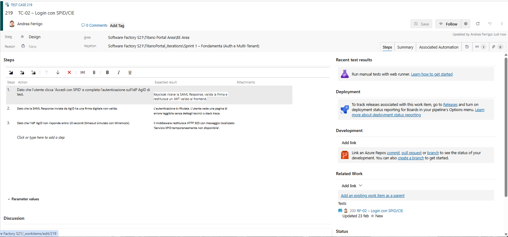
Immagine: Azure DevOps: scheda del Test Case 219 "Login con SPID/CIE" con tre passi di test e i relativi risultati attesi.
Descrizione. Screenshot di Azure DevOps con il dettaglio del Test Case 219 "TC-02 – Login con SPID/CIE", assegnato ad Andrea Ferrigo, stato "Design", area Software Factory S21\Titano Portal Area\BE Area, iterazione "Sprint 1 – Fondamenta (Auth e Multi-Tenant)". Al centro l'elenco dei passi (Steps) con colonne Action e Expected result: tre passi, il primo evidenziato. A destra i pannelli Recent test results, Deployment, Development, Related Work (il test è collegato al requisito "200 RF-02 – Login con SPID/CIE").
Testo contenuto nell’immagine
TEST CASE 219 — TC-02 – Login con SPID/CIE — Andrea Ferrigo — State: Design — Reason: New
1. Action: Dato che l'utente clicca 'Accedi con SPID' e completa l'autenticazione sull'IdP AgID di test. — Expected result: Keycloak riceve la SAML Response, valida la firma e restituisce un JWT valido al frontend.
2. Action: Dato che la SAML Response inviata da AgID ha una firma digitale non valida. — Expected result: L'autenticazione è rifiutata. L'utente vede una pagina di errore leggibile senza dettagli tecnici o stack trace.
3. Action: Dato che l'IdP AgID non risponde entro 10 secondi (timeout simulato con Wiremock). — Expected result: Il middleware restituisce HTTP 503 con messaggio localizzato 'Servizio SPID temporaneamente non disponibile'.
Pannelli: Recent test results (Run manual tests with web runner); Deployment; Development; Related Work — Tests: 200 RF-02 – Login con SPID/CIE (Updated 23 feb, New).
3. Test run
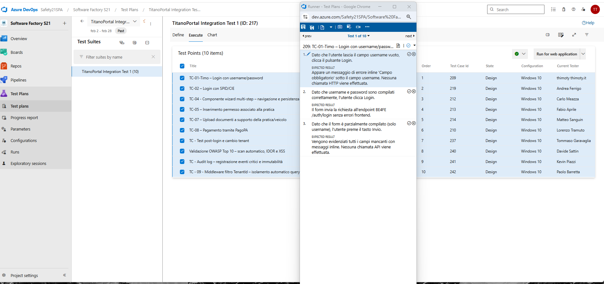
Immagine: Azure DevOps: esecuzione dei test manuali con il Web Runner, in una finestra del browser sopra l'elenco dei dieci test point.
Descrizione. Screenshot di Azure DevOps, scheda Execute del piano "TitanoPortal Integration Test 1 (ID: 217)". Sullo sfondo la tabella dei dieci "Test Points" con colonne Title, Order, Test Case Id, State, Configuration (Windows 10) e Current Tester; tutti selezionati. Sopra, una finestra separata del browser, "Runner - Test Plans", mostra il test "209: TC-01-Timo – Login con username/password" (Test 1 di 10) con tre passi, ciascuno con il risultato atteso (EXPECTED RESULT) e i pulsanti per segnarlo come superato o fallito. A destra, in alto, il pulsante "Run for web application".
TitanoPortal Integration Test 1 (ID: 217) — schede Define, Execute, Chart. Test Suites: TitanoPortal Integration Test 1 (10)
Test Points (10 items): TC-01-Timo – Login con username/password (209); TC-02 – Login con SPID/CIE (219); TC-04 - Componente wizard multi-step – navigazione e persistenza (212); TC-05 – Inserimento permesso associato alla pratica (213); TC-07 – Upload documenti a supporto della pratica/veicolo (214); TC-08 – Pagamento tramite PagoPA (210); TC - Test post-login e cambio tenant (237); Validazione OWASP Top 10 – scan automatico, IDOR e XSS (240); TC - Audit log – registrazione eventi critici e immutabilità (241); TC - 09 - Middleware filtro TenantId – isolamento automatico query DB (242). Configurazione: Windows 10; State: Design.
Finestra Runner – Test Plans – Google Chrome (dev.azure.com/Safety21SPA/Software%20Fa…), Test 1 of 10, "209: TC-01-Timo – Login con username/passw…":
1. Dato che l'utente lascia il campo username vuoto, clicca il pulsante Login. EXPECTED RESULT: Appare un messaggio di errore inline 'Campo obbligatorio' sotto il campo username. Nessuna chiamata HTTP viene effettuata.
2. Dato che username e password sono compilati correttamente, l'utente clicca Login. EXPECTED RESULT: Il form invia la richiesta all'endpoint BE4FE /auth/login senza errori frontend.
3. Dato che il form è parzialmente compilato (solo username), l'utente preme il tasto Invio. EXPECTED RESULT: Vengono evidenziati tutti i campi mancanti con messaggi inline. Nessuna chiamata API viene effettuata.
Pulsante: Run for web application
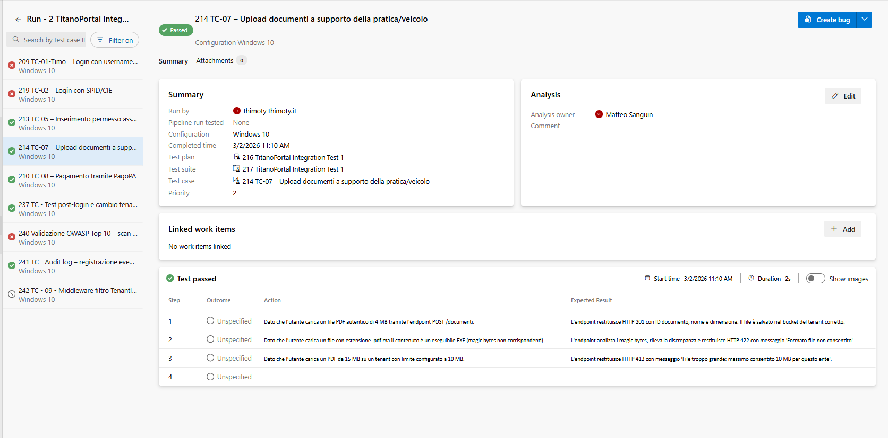
Immagine: Azure DevOps: risultati di una esecuzione di test: elenco con test superati e falliti, dettaglio del test 214 superato con i suoi passi.
Descrizione. Screenshot di Azure DevOps con la pagina "Run - 2 TitanoPortal Integ…". A sinistra l'elenco dei test case con un'icona di esito: rosso (fallito) per 209 TC-01 e 219 TC-02 e 240 Validazione OWASP; verde (superato) per 213, 214, 210, 237, 241; grigio (non eseguito) per 242. È selezionato il 214 "TC-07 – Upload documenti a supporto della pratica/veicolo", con stato "Passed" e configurazione Windows 10. Al centro il riepilogo (Run by, configurazione, data di completamento 3/2/2026 11:10, test plan, test suite, test case, priorità 2), "Linked work items" vuoto e, in basso, "Test passed" con tabella dei quattro passi (Step, Outcome, Action, Expected Result). A destra "Analysis" con proprietario Matteo Sanguin e il pulsante "Create bug".
Testo contenuto nell’immagine
Run - 2 TitanoPortal Integ… — Search by test case ID; Filter on
Elenco: 209 TC-01-Timo – Login con username… (fallito); 219 TC-02 – Login con SPID/CIE (fallito); 213 TC-05 – Inserimento permesso ass… (superato); 214 TC-07 – Upload documenti a supp… (superato, selezionato); 210 TC-08 – Pagamento tramite PagoPA (superato); 237 TC - Test post-login e cambio tena… (superato); 240 Validazione OWASP Top 10 – scan … (fallito); 241 TC - Audit log – registrazione eve… (superato); 242 TC - 09 - Middleware filtro Tenantl… (non eseguito). Tutti: Windows 10.
Dettaglio: 214 TC-07 – Upload documenti a supporto della pratica/veicolo — Passed — Configuration Windows 10 — Create bug. Schede: Summary, Attachments (0).
Summary: Run by thimoty thimoty.it; Pipeline run tested None; Configuration Windows 10; Completed time 3/2/2026 11:10 AM; Test plan 216 TitanoPortal Integration Test 1; Test suite 217 TitanoPortal Integration Test 1; Test case 214 TC-07 – Upload documenti a supporto della pratica/veicolo; Priority 2.
Analysis: Analysis owner Matteo Sanguin; Comment (vuoto). Linked work items: No work items linked.
Test passed — Start time 3/2/2026 11:10 AM — Duration 2s — Show images
Passi: 1 Unspecified — Dato che l'utente carica un file PDF autentico di 4 MB tramite l'endpoint POST /documenti. → L'endpoint restituisce HTTP 201 con ID documento, nome e dimensione. Il file è salvato nel bucket del tenant corretto. 2 Unspecified — Dato che l'utente carica un file con estensione .pdf ma il contenuto è un eseguibile EXE (magic bytes non corrispondenti). → L'endpoint analizza i magic bytes, rileva la discrepanza e restituisce HTTP 422 con messaggio 'Formato file non consentito'. 3 Unspecified — Dato che l'utente carica un PDF da 15 MB su un tenant con limite configurato a 10 MB. → L'endpoint restituisce HTTP 413 con messaggio 'File troppo grande: massimo consentito 10 MB per questo ente'. 4 Unspecified (vuoto).
4. Bug e fix
Se un test fallisce: Bug collegato al Test Case → Task di correzione → nuova esecuzione → chiusura.
Slide 75. Dashboard operative: vedere flusso e capacità
Durata prevista: 15 minuti.
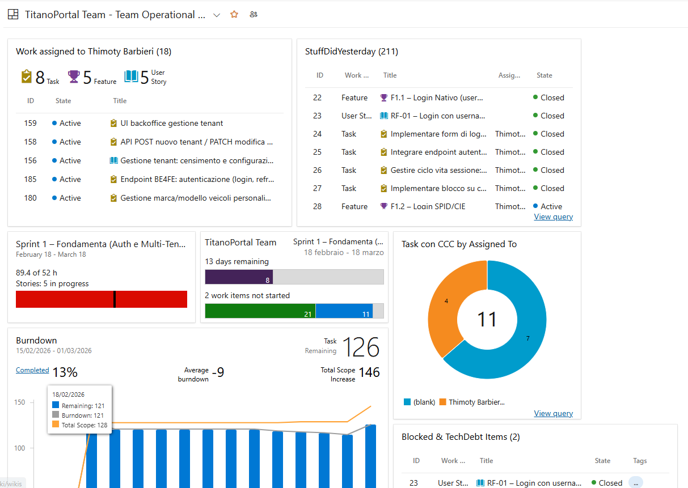
Immagine: Azure DevOps: cruscotto operativo del team TitanoPortal con lavoro assegnato, avanzamento dello sprint, grafico a ciambella e burndown.
Descrizione. Screenshot del cruscotto (dashboard) "TitanoPortal Team - Team Operational …" di Azure DevOps, composto da riquadri (widget). In alto a sinistra "Work assigned to Thimoty Barbieri (18)": 8 task, 5 feature, 5 user story, con un elenco di work item attivi. In alto a destra "StuffDidYesterday (211)", elenco di work item chiusi o attivi ieri. Al centro, il riquadro "Sprint 1 – Fondamenta (Auth e Multi-Tenant)" (18 febbraio – 18 marzo): 89,4 di 52 ore, "Stories: 5 in progress" con barra rossa; il riquadro del team con "13 days remaining" e barre di avanzamento (8 giorni; 21 e 11 work item). A destra, un grafico a ciambella "Task con CCC by Assigned To" con totale 11: 7 non assegnati (blu) e 4 di Thimoty Barbieri (arancione). In basso il grafico "Burndown" (15/02/2026 – 01/03/2026): task rimanenti 126, completato 13%, burndown medio −9, aumento dello scope totale 146; un suggerimento mostra per il 18/02/2026 Remaining 121, Burndown 121, Total Scope 128. In basso a destra "Blocked & TechDebt Items (2)".
Testo contenuto nell’immagine
TitanoPortal Team - Team Operational …
Work assigned to Thimoty Barbieri (18): 8 Task, 5 Feature, 5 User Story. 159 Active UI backoffice gestione tenant; 158 Active API POST nuovo tenant / PATCH modifica …; 156 Active Gestione tenant: censimento e configurazi…; 185 Active Endpoint BE4FE: autenticazione (login, refr…; 180 Active Gestione marca/modello veicoli personali…
StuffDidYesterday (211): 22 Feature F1.1 – Login Nativo (user… Closed; 23 User Story RF-01 – Login con userna… Closed; 24 Task Implementare form di log… Closed; 25 Task Integrare endpoint autent… Closed; 26 Task Gestire ciclo vita sessione:… Closed; 27 Task Implementare blocco su c… Closed; 28 Feature F1.2 – Login SPID/CIE Active. View query.
Sprint 1 – Fondamenta (Auth e Multi-Tenant), February 18 - March 18: 89.4 of 52 h; Stories: 5 in progress.
TitanoPortal Team — Sprint 1 – Fondamenta, 18 febbraio - 18 marzo: 13 days remaining (8); 2 work items not started (21, 11).
Task con CCC by Assigned To: 11 (blank) 7; Thimoty Barbieri 4. View query.
Burndown 15/02/2026 - 01/03/2026: Task Remaining 126; Completed 13%; Average burndown -9; Total Scope Increase 146. Tooltip 18/02/2026: Remaining: 121, Burndown: 121, Total Scope: 128.
Blocked & TechDebt Items (2): 23 User St… RF-01 – Login con userna… Closed.
TEAM: carico, burndown, blocchi
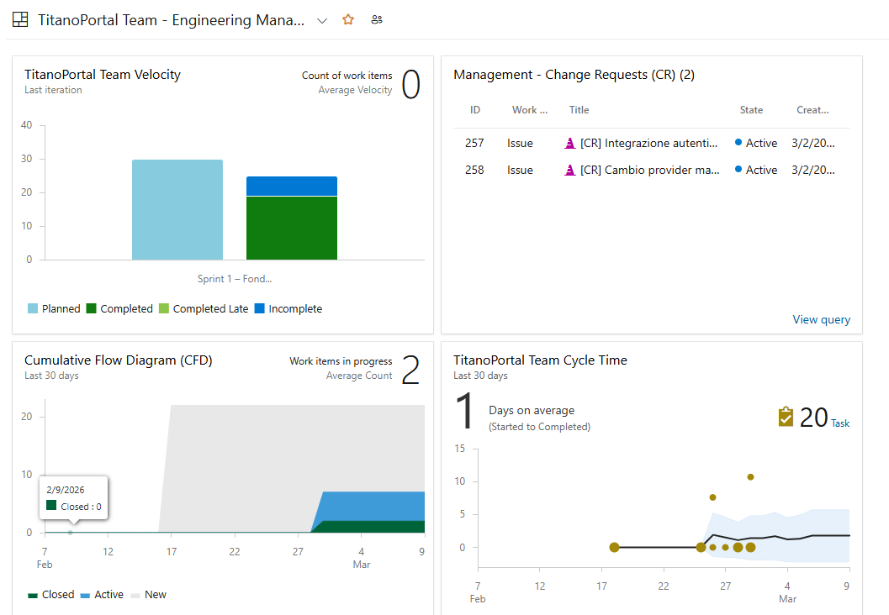
Immagine: Azure DevOps: cruscotto strategico di engineering management con velocity, richieste di modifica, diagramma di flusso cumulativo e cycle time.
Descrizione. Screenshot del cruscotto "TitanoPortal Team - Engineering Mana…" di Azure DevOps, con quattro riquadri. "TitanoPortal Team Velocity" (ultima iterazione): grafico a barre per lo Sprint 1, con una barra azzurra dei work item pianificati (circa 30) e una barra composta da una parte verde completata (circa 19) e una blu incompleta (circa 6); velocità media 0. "Management - Change Requests (CR) (2)": due richieste di modifica attive, 257 "[CR] Integrazione autentic…" e 258 "[CR] Cambio provider ma…", create il 3/2/20… . "Cumulative Flow Diagram (CFD)" degli ultimi 30 giorni: aree New (grigio), Active (azzurro) e Closed (verde); i work item in corso sono in media 2; il tooltip del 9 febbraio indica Closed: 0. "TitanoPortal Team Cycle Time" degli ultimi 30 giorni: in media 1 giorno (da avviato a completato) su 20 task, con un grafico a punti.
Testo contenuto nell’immagine
TitanoPortal Team - Engineering Mana…
TitanoPortal Team Velocity — Last iteration — Count of work items, Average Velocity: 0. Sprint 1 – Fond… Legenda: Planned, Completed, Completed Late, Incomplete.
Cumulative Flow Diagram (CFD) — Last 30 days — Work items in progress, Average Count: 2. Legenda: Closed, Active, New. Tooltip 2/9/2026 Closed: 0.
TitanoPortal Team Cycle Time — Last 30 days — 1 Days on average (Started to Completed) — 20 Task.
MANAGEMENT: velocity, CFD, cycle time
Figure S21: Cruscotto tattico e cruscotto strategico
Slide 76. Dashboard qualità: difetti, tempi ed esiti dei test
Durata prevista: 18 minuti.
Didascalia. BUG ATTIVI, SEVERITÀ, LEAD TIME
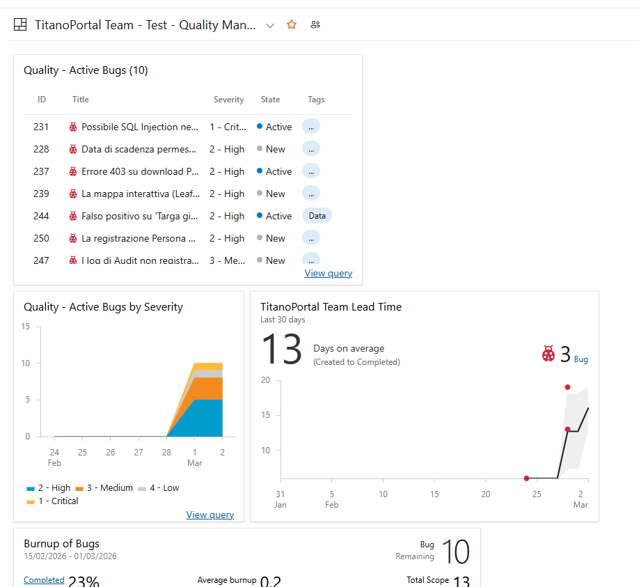
Immagine: Azure DevOps: cruscotto qualità con elenco dei bug attivi, bug per gravità e tempo di lead time.
Descrizione. Screenshot del cruscotto "TitanoPortal Team - Test - Quality Man…". In alto "Quality - Active Bugs (10)": tabella con ID, titolo, gravità, stato e tag; ad esempio 231 "Possibile SQL Injection ne…" gravità 1 - Critical, attivo; 228, 237, 239, 244, 250 con gravità 2 - High; 247 gravità 3 - Medium. Sotto a sinistra "Quality - Active Bugs by Severity": grafico ad aree dal 24 febbraio al 2 marzo, con valori a zero fino al 28 febbraio e poi un forte aumento fino a 10 bug (High, Medium, Low, Critical). A destra "TitanoPortal Team Lead Time" degli ultimi 30 giorni: in media 13 giorni (da creato a completato) su 3 bug. In basso inizia il riquadro "Burnup of Bugs": 10 bug rimanenti, 23% completato, burnup medio 0,2, scope totale 13.
Testo contenuto nell’immagine
TitanoPortal Team - Test - Quality Man…
Quality - Active Bugs (10): ID, Title, Severity, State, Tags
231 Possibile SQL Injection ne… — 1 - Crit… — Active
228 Data di scadenza permes… — 2 - High — New
237 Errore 403 su download P… — 2 - High — Active
239 La mappa interattiva (Leaf… — 2 - High — New
244 Falso positivo su 'Targa gi… — 2 - High — Active — tag Data
250 La registrazione Persona … — 2 - High — New
247 I log di Audit non registra… — 3 - Me… — New
Quality - Active Bugs by Severity: legenda 2 - High, 3 - Medium, 4 - Low, 1 - Critical; asse dal 24 Feb al 2 Mar.
TitanoPortal Team Lead Time — Last 30 days — 13 Days on average (Created to Completed) — 3 Bug
Burnup of Bugs 15/02/2026 - 01/03/2026 — Bug Remaining 10; Completed 23%; Average burnup 0.2; Total Scope 13
Didascalia. SCOPE CREEP ED ESCAPED DEFECT
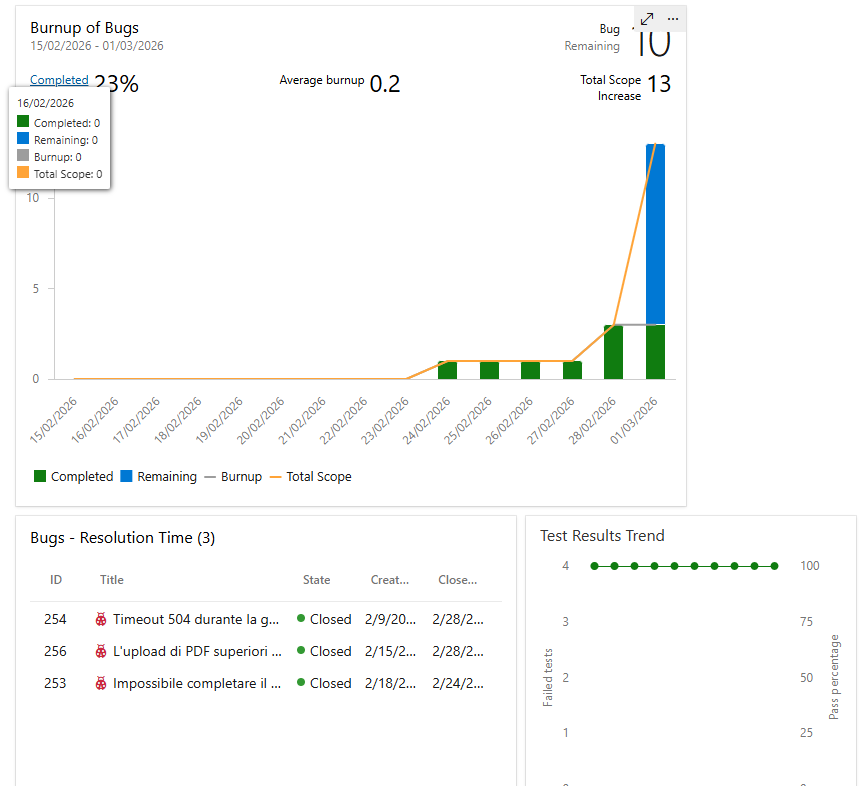
Immagine: Azure DevOps: grafico "Burnup of Bugs" con i bug completati e rimanenti, e riquadri sui tempi di risoluzione e sull'andamento dei test.
Descrizione. Screenshot di due riquadri del cruscotto qualità di Azure DevOps. In alto "Burnup of Bugs" (15/02/2026 – 01/03/2026): 10 bug rimanenti, 23% completato, burnup medio 0,2, aumento dello scope totale 13. Il grafico a barre mostra le barre verdi dei bug completati (da 1 il 24 febbraio a 3 il 28 febbraio e 1 marzo) e, solo l'1 marzo, una grande barra blu di bug rimanenti; la linea arancione dello scope totale sale da 0 a 13 nell'ultimo giorno. Un tooltip del 16/02/2026 indica tutti i valori a 0. In basso a sinistra "Bugs - Resolution Time (3)": tre bug chiusi. In basso a destra "Test Results Trend": una linea verde piatta a 4 test falliti, con asse della percentuale di successo da 0 a 100.
Testo contenuto nell’immagine
Burnup of Bugs — 15/02/2026 - 01/03/2026 — Bug Remaining 10; Completed 23%; Average burnup 0.2; Total Scope Increase 13
Slide 77. Caso S21: dall'approvazione della release al deploy
Durata prevista: 20 minuti.
Sequenza in quattro passi, dalla approvazione della release al deploy.
1. Approvazione
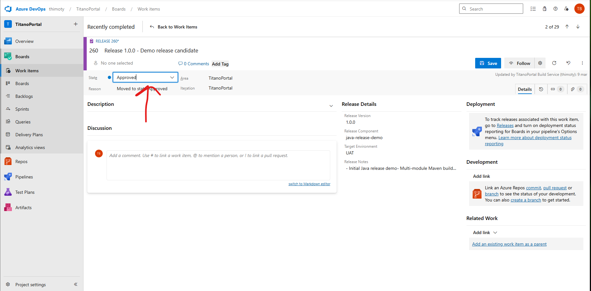
Immagine: Azure DevOps: work item di tipo Release 260 "Release 1.0.0 - Demo release candidate" con lo stato che passa ad Approved, evidenziato da una freccia rossa.
Descrizione. Screenshot di Azure DevOps (progetto TitanoPortal, Boards › Work items) con il work item "RELEASE 260 – Release 1.0.0 - Demo release candidate". Una freccia rossa disegnata sull'immagine punta al campo "State", impostato su "Approved", con motivo "Moved to state Approved". Nella sezione "Release Details": Release Version 1.0.0, Release Component java-release-demo, Target Environment UAT, Release Notes "- Initial Java release demo - Multi-module Maven build…". Sono presenti anche le sezioni Description, Discussion (campo commento), Deployment, Development e Related Work. In alto a destra: "Updated by TitanoPortal Build Service (thimoty): 9 mar".
Testo contenuto nell’immagine
Azure DevOps thimoty / TitanoPortal / Boards / Work items — Recently completed — 2 of 29
RELEASE 260* — 260 Release 1.0.0 - Demo release candidate — No one selected — 0 Comments — Add Tag
State: Approved (freccia rossa); Reason: Moved to state Approved; Area: TitanoPortal; Iteration: TitanoPortal
Deployment: To track releases associated with this work item, go to Releases and turn on deployment status reporting for Boards in your pipeline's Options menu.
Development: Add link — Link an Azure Repos commit, pull request or branch to see the status of your development. You can also create a branch to get started.
Related Work: Add link — Add an existing work item as a parent
Discussion: Add a comment. Use # to link a work item, @ to mention a person, or ! to link a pull request. (switch to Markdown editor)
2. Trigger
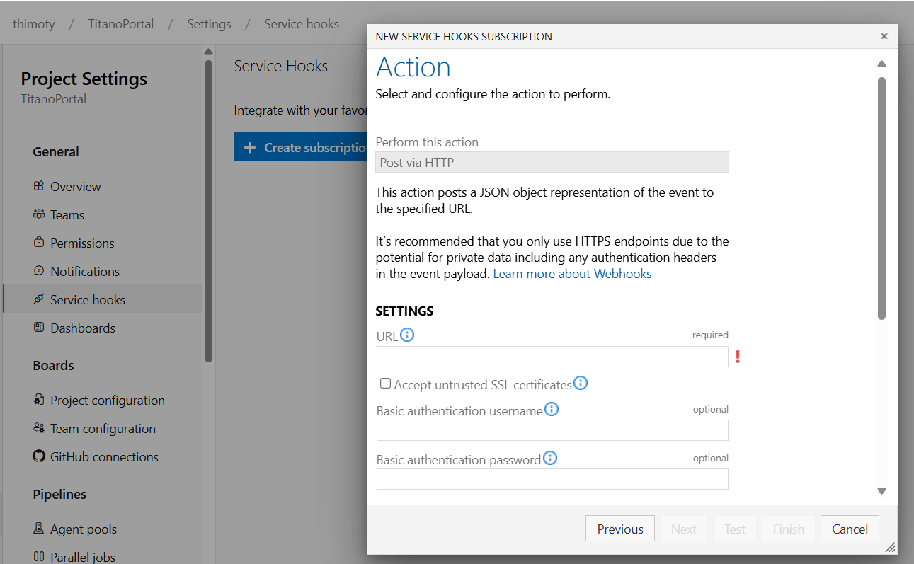
Immagine: Azure DevOps: finestra "New service hooks subscription", passo Action, per inviare gli eventi con un POST HTTP a un URL.
Descrizione. Screenshot delle impostazioni del progetto TitanoPortal in Azure DevOps, pagina "Service Hooks", con una finestra di dialogo "New service hooks subscription" sul passo "Action". A sinistra il menu Project Settings (General: Overview, Teams, Permissions, Notifications, Service hooks, Dashboards; Boards; Pipelines…). Nella finestra: azione "Post via HTTP", con la spiegazione che l'azione invia una rappresentazione JSON dell'evento all'URL indicato e il consiglio di usare solo endpoint HTTPS. Campi: URL (obbligatorio, vuoto, con segnale di errore), casella "Accept untrusted SSL certificates", "Basic authentication username" e "Basic authentication password" (facoltativi). In fondo i pulsanti Previous, Next, Test, Finish, Cancel (solo Previous e Cancel attivi).
Testo contenuto nell’immagine
thimoty / TitanoPortal / Settings / Service hooks
Project Settings TitanoPortal — General: Overview, Teams, Permissions, Notifications, Service hooks, Dashboards; Boards: Project configuration, Team configuration, GitHub connections; Pipelines: Agent pools, Parallel jobs
Service Hooks — "Integrate with your favor…" — pulsante "+ Create subscription"
NEW SERVICE HOOKS SUBSCRIPTION — Action
Select and configure the action to perform.
Perform this action: Post via HTTP
This action posts a JSON object representation of the event to the specified URL. It's recommended that you only use HTTPS endpoints due to the potential for private data including any authentication headers in the event payload. Learn more about Webhooks
Immagine: Azure DevOps, finestra History di un Web Hook: tre invii, due falliti e uno riuscito, con il contenuto JSON della richiesta.
Descrizione. Screenshot della finestra "History" di Azure DevOps per la sottoscrizione "Work item updated > Web Hooks (Post via HTTP)". In alto: creata da Thimoty Barbieri (19 minuti fa), modificata da Thimoty Barbieri (2 minuti fa), "Detailed logging: On". A sinistra l'elenco dei tentativi: due "Failed" (17 e 3 minuti fa) e uno "Succeeded" (2 minuti fa, selezionato); in fondo il riepilogo degli ultimi 7 giorni: 1 riuscito e 2 falliti. A destra, nella scheda "Request" (le altre sono Summary, Response, Event), si vede parte del JSON inviato: i campi modificati dal work item con "oldValue" e "newValue", tra cui lo stato che passa da "Approved" a "Draft" con motivo "Moved to state Draft".
Testo contenuto nell’immagine
HISTORY — Work item updated > Web Hooks (Post via HTTP)
Created by: Thimoty Barbieri (19 minutes ago) · Modified by: Thimoty Barbieri (2 minutes ago) · Detailed logging: On
"System.Reason": { "oldValue": "Moved to state Approved", "newValue": "Moved to state Draft" }
Pulsante: Close
4. Artifact
Immagine: Azure DevOps Artifacts: feed "TitanoPortal" con sei pacchetti Maven, NuGet e Python.
Descrizione. Screenshot della pagina Artifacts di Azure DevOps con il feed "TitanoPortal". In alto i pulsanti "Connect to Feed", "Create Feed", "Search Upstream Sources" e "Recycle Bin". Una tabella con colonne Type, Package, Views e Source elenca sei pacchetti, tutti con sorgente "This feed": tre pacchetti Maven (icona "M" arancione) e due pacchetti NuGet (icona blu), più un pacchetto Python (icona con serpenti blu e giallo).
Testo contenuto nell’immagine
Feed: TitanoPortal — Connect to Feed · Create Feed · Search Upstream Sources · Recycle Bin
Colonne: Type, Package, Views, Source
Maven: com.example.demo:app, Version 1.0.6, This feed
Maven: com.example.demo:java-release-demo-parent, Version 1.0.6, This feed
Maven: com.example.demo:shared-lib, Version 1.0.6, This feed
NuGet: CourseDemo.GreeterApp, Version 1.0.0, This feed
NuGet: CourseDemo.SharedLib, Version 1.0.0, This feed
Python: titanoport-report, Version 1.0.1.115, This feed
Slide 78. Osservabilità e gestione operativa
Durata prevista: 10 minuti.
Log, metriche e trace
Health check e alert
Obiettivi di servizio
Capacità di diagnosi
Schema grafico: tre segnali, una storia
Quattro riquadri: Log e Metriche sono in alto, affiancati, e con due frecce convergono su Contesto, in posizione centrale; sotto compare Trace. I tre segnali (log, metriche, trace) insieme costruiscono il contesto per capire che cosa è successo.
Didascalia sotto lo schema: alert → diagnosi → azione.
Slide 79. Modernizzare: dove sta davvero il valore?
CONFRONTO GUIDATO
Durata prevista: 30 minuti.
Scenario
Un'applicazione stabile viene proposta per la migrazione a microservizi su Kubernetes.